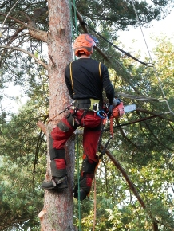
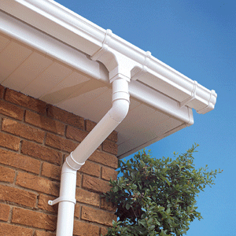
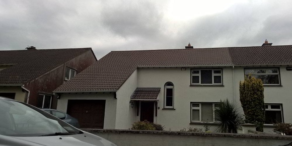
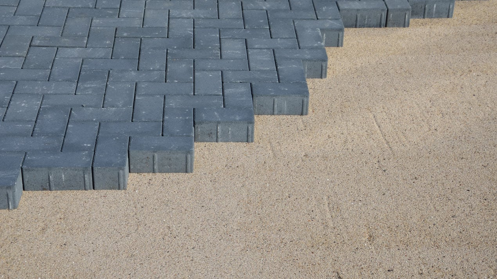
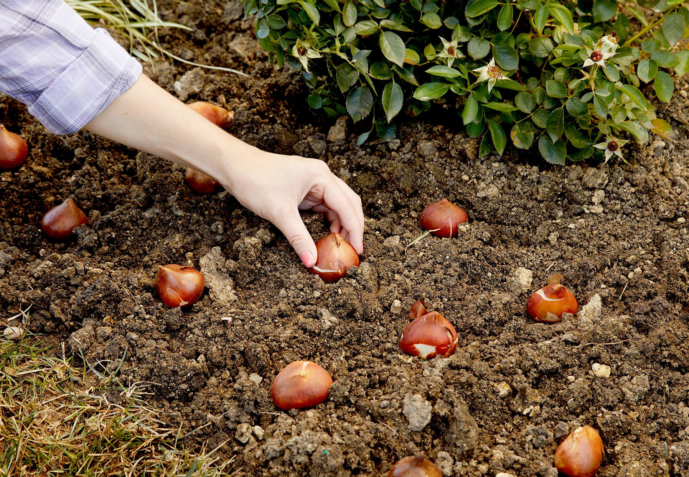

Garden landscaping is the ideal way to craft an attractive space to
grow plants that give you a beautiful environment and design a
practical layout that allows you to use your garden how you want.
Landscaping
Landscaping

Roof cleaning is the process of removing algae,mold, mildew, lichen
and moss from roofs. Also cleaning oxidation on metal roofs.

Driveway washing services are suitable for many driveway surfaces
including: tarmacadam, imprinted, concrete, cobblelock brick, block paving, monoblock driveway cleanings.

If your gutters have started overflowing it’s time for a clean. We
can unblock everything from your gutters.

Roll out grass can offer an amazing looking lawn quickly and
effectively without having to wait years and dedicate time and
effort to filling in all the bare patches. The garden grass is
installed in a short space of time, transforming your garden.

We provide all types of tree surveys, including Arboricultural
Impact Assessments and Tree Constraints Plan.

We offer a PVC cleaning service to homes and businesses throughout
the Causeway Coast & Glens Borough. Removing dirt and grime from
your home's PVC can really brighten up your property and improve
curb appeal.

Deep cleaning involves a thorough scrubbing of all surfaces, even
hard-to-reach areas.

Restore your block paved driveway are that it is important to
maintain your block paving on a regular basis. Our services include
block paving cleaning, re-sanding and sealing.


Garden Planting can often prove to be the most cost effective way of
improving a garden. We have extensive knowledge of which plants are
most likely to succeed in gardens in Ireland.

We offer services such as weeding, pruning of shrubs and hedges,
mulching, lawn care to keep it in great condition, cleaning.
Garden landscaping is the ideal way to craft an
attractive space to grow plants that give you a beautiful environment
and design a practical layout that allows you to use your garden how
you want. Take a look at some of our favourite ways to get that garden
into shape this summer
Roof cleaning is the process of removing algae,mold,
mildew, lichen and moss from roofs. Also cleaning oxidation on metal
roofs. Cleaning can extend the duration ofccc a roof's ability to
function. Algae and other types of build-up often form on the north
and west parts of roofs that are shaded or receive less sun, and can
reduce a roof's life expectancy. The presence of soot, dirt, or
biomass can affect how much sunlight is absorbed by a roof and thus
the amount of heat a building absorbs.
Driveway washing services are suitable for many driveway
surfaces including:
Tarmacadam driveway cleaning
Imprinted concrete driveway cleaning
Cobblelock brick driveway cleaning
Block Paving driveway cleaning
Monoblock driveway cleaning.
Tarmacadam driveway cleaning
Imprinted concrete driveway cleaning
Cobblelock brick driveway cleaning
Block Paving driveway cleaning
Monoblock driveway cleaning.
Gutter Cleaning. If your gutters have started overflowing
it’s time for a clean. We can unblock everything from your gutters
including: moss, leaves, silt and general debris. Anything removed can
either be disposed of in your compost bin or we can remove it from
your premises for you. It’s best to get your gutters cleaned at least
once a year – a popular time for our clients is during the big spring
clean to get rid of the winter’s debris.
Rolled Grass. Roll out grass can offer an amazing looking
lawn quickly and effectively without having to wait years and dedicate
time and effort to filling in all the bare patches. The garden grass
is installed in a short space of time, transforming your garden. With
the proper maintenance, your garden can stay looking wonderful for
years after you have installed the rollout grass.
Tree Surgeon. We provide all types of tree surveys,
including Arboricultural Impact Assessments and Tree Constraints Plan.
Do you require tree removal but are scared of unprofessional companies
damaging your property? Heritage Tree Care Ltd. are fully qualified,
fully insured and experienced in all of the removal methods explained
below.
We offer a PVC cleaning service to homes and businesses
throughout the Causeway Coast & Glens Borough. Removing dirt and grime
from your home's PVC can really brighten up your property and improve
curb appeal.
House wash down. Deep cleaning involves a thorough
scrubbing of all surfaces, even hard-to-reach areas. Everything in
your house that a stool can reach will be hand-wiped. Aside from the
in-depth approach, it promotes general sanitation and livability.
Blockpaving Resand. Restore your block paved driveway
are that it is important to maintain your block paving on a regular
basis, as without regular cleaning, driveways can become dirty and
damp weather can attract algae, moss, lichen and weeds to grow on your
driveway blocks paving and slabs and in the joints, in turn this can
cause the block paving and other areas of the driveway to become
cracked, sink or raised as a result. Our services include block paving
cleaning, re-sanding and sealing.
Tree, hedge trimming. The best time to prune is after
flowering. If the plant needs to be renovated, or severely reduced,
this can be done late winter and early spring just before growth
begins. Remove old flowers (deadhead) and cut back to healthy outward
facing buds. Remove damaged, diseased, old wood and straggly growth.
A new garden or an existing garden can be greatly improved by good
Garden Planting and new Planting Ideas. Adding some new
plants or creating a new garden border can have an amazing effect on
your garden. At very competitive rates we can give you Planting Advise
for your garden. We can give you some great planting ideas and/or we
can re-design your garden planting. This can be stand alone service or
if you wish to we can also, provide the plants for you to plant or if
required plant it for you.
Garden Cleaning. A good garden maintenance company will
offer services such as weeding, pruning of shrubs and hedges,
mulching, lawn care to keep it in great condition, cleaning off of
decking and patios (jet-washing), installation and care of irrigation
systems, servicing and maintenance of water features, planting and
green wall maintenance. Everything you need done in your garden to
keep it looking wonderful and make it a pleasant place to be.